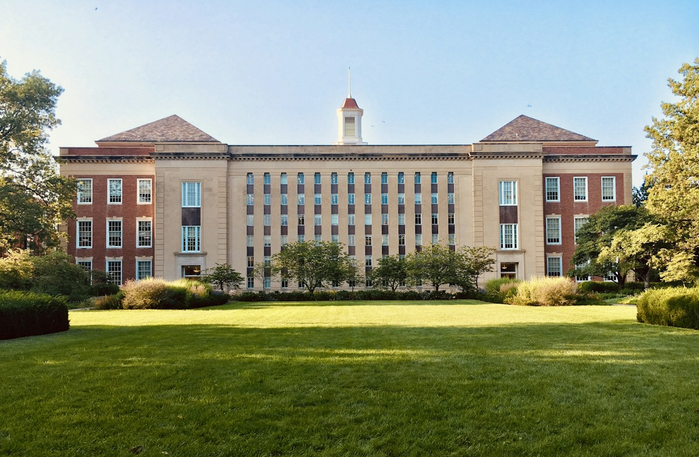
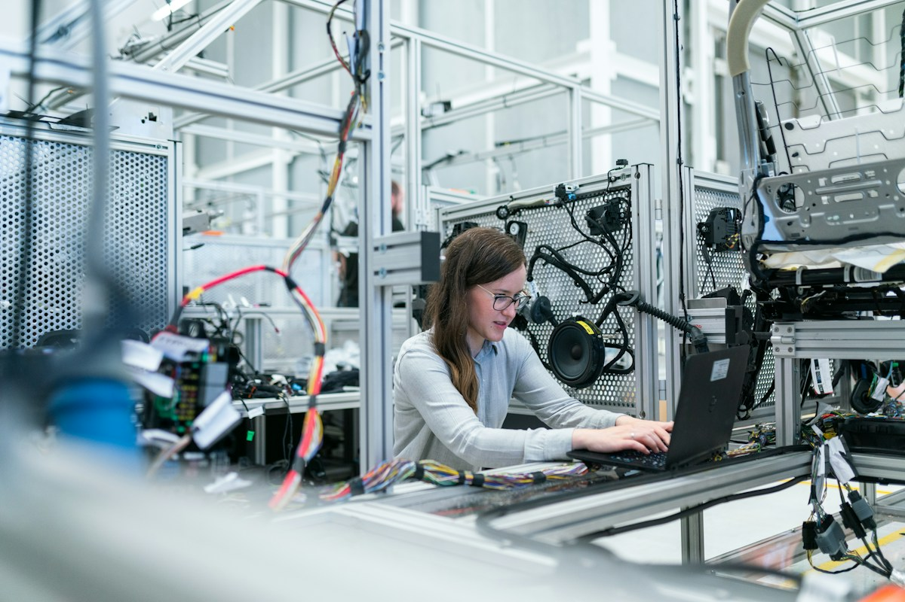

Informasi Event
Menampilkan informasi kegiatan kampus agar mudah diketahui oleh calon peserta.
↗Satu ruang untuk setiap kegiatan kampus.
Menghubungkan informasi kegiatan, pendaftaran peserta, jadwal, dan fasilitas pendukung dalam satu sistem yang terintegrasi.
SIPAFIK merupakan sistem informasi berbasis web yang dirancang untuk membantu pengelolaan kegiatan kampus dan fasilitas pendukungnya.
Melalui satu platform, informasi event, proses pendaftaran peserta, jadwal kegiatan, serta kebutuhan fasilitas dapat dikelola dengan lebih terarah.
Informasi yang dibutuhkan untuk mendukung kegiatan kampus dalam satu alur pengelolaan.
Menampilkan informasi kegiatan kampus agar mudah diketahui oleh calon peserta.
↗Mendukung proses pendaftaran dan pengelolaan data peserta kegiatan.
↗Membantu penyusunan dan penyampaian jadwal kegiatan secara terstruktur.
↗Mendukung pengelolaan kebutuhan ruang, aula, laboratorium, dan fasilitas kampus lainnya.
↗Berbagai jenis kegiatan yang dapat diperkenalkan dan dikelola melalui SIPAFIK.
Fasilitas kampus menjadi bagian penting dalam kelancaran penyelenggaraan kegiatan.

Untuk seminar, pertemuan, dan kegiatan berskala besar.

Untuk kegiatan praktik, pelatihan, dan pembelajaran.
Untuk rapat, koordinasi, dan diskusi kelompok.
Gambaran umum alur pengelolaan kegiatan dan fasilitas pendukungnya.
Informasi kegiatan disiapkan dan diperkenalkan kepada calon peserta.
Peserta memperoleh informasi dan melakukan pendaftaran kegiatan.
Jadwal serta kebutuhan fasilitas pendukung dikelola sesuai kegiatan.
Kegiatan dijalankan dengan informasi dan kebutuhan yang lebih terarah.
Setiap pengguna memiliki peran sesuai kebutuhan pengelolaan kegiatan dan fasilitas kampus.
Melihat informasi kegiatan dan mengikuti proses pendaftaran event.
Mengelola informasi dan kebutuhan penyelenggaraan kegiatan.
Mendukung pengelolaan fasilitas dan jadwal penggunaannya.
Mendukung pengelolaan dan pengawasan sistem secara keseluruhan.
Mendukung pengelolaan kegiatan kampus melalui informasi yang lebih terarah dan terintegrasi.
Kembali ke atas ↑